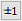
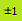
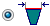
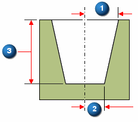
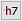
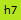
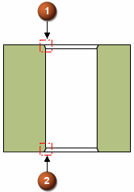

Hole Options dialog box (Tapered)
- Type
-
The available hole types are shown with icons. You select the hole type by clicking one of the hole type icons (Simple, Threaded, Counterbore, Countersink or Tapered).
- Standard
-
Specifies the industry standard to use for the hole database.
- Open database
-
Opens the hole database for the selected standard.
- Sub type
-
Specifies the sub type of the selected hole type.
- Size
-
Specifies the hole size of the selected hole type.
- Fit
-
Option disabled for threaded holes.
- Saved Settings
-
Lists saved hole settings. You can access the saved settings by selecting them from the list. The settings on the dialog box display the characteristics of the hole you select. You can type a name in the box to name a group of settings.
- Save
-
Saves the current settings to the name you type. The settings are stored in an external file named Custom.xml.
For more information on the Custom.xml file and storing commonly used hole parameters, see Saving commonly used hole parameters.
- Delete
-
Deletes the saved setting selected in the Save Settings box.
- Hole extents
-
Specifies the extent or depth of the hole you are constructing. You can also specify the shape at the bottom of holes that do not extend completely through the part.
- Through All
-
Sets the extent to through all. The hole is constructed through all of the faces encountered on the part.
- Through Next
-
Sets the extent to through next. The hole is constructed through the first exterior face encountered on the part.
- From/To (ordered environment only)
-
Sets the extent of the hole by specifying two part faces. The entry face does not have to be the face that the hole circle is on.
- Finite
-
Sets the extent to finite.
- Hole depth
-
Sets the depth of the finite hole you are constructing. This option is available only when you select the Finite Extent option. You can specify Unit Tolerance to hole depth using the Tolerance dialog box.
Note:When you apply Unit Tolerance to hole depth,

changes to
.You can hover over the button to display the Unit Tolerance information applied to the hole depth.
- V bottom angle
-
Makes the bottom of the hole a V shape. This option is available only when you select the Finite Extent option. You can set the angle for the bottom of the hole. The angle you specify represents the total included angle of the bottom of the hole.
- Dimension to flat
-
Specifies that the hole depth will dimension to the flat portion of the hole where the V bottom angle starts. This option is available only when you select the Finite Extent option.
- Dimension to V
-
Specifies that the hole depth will dimension to the V bottom of the hole. This option is available only when you select the Finite Extent option.
- Profile at Bottom
-
Specifies that you want to create the taper based on the diameter at the bottom of the hole.
- Profile at Top

-
Specifies that you want to create the taper based on the diameter at the top of the hole.
- Angle
-
Specifies that you want to use the angle method to create the taper. In this method, you simply type in the angle for the taper. You cannot specify a value of 90 degrees.
- Decimal (R/L)
-

Specifies that you want to use the decimal method to create the taper. In this method, the angle of the taper is determined by dividing the change in radius of the hole over a length (R = distance 2 subtracted from distance 1) by that length (L = distance 3).
- Ratio (R:L)
-
Specifies that you want to use the ratio method to create the taper. In this method, the angle of the taper is determined by a ratio of the change in radius of the cone over a length (R = distance 2 subtracted from distance 1) to the length (L = distance 3) of the hole.
- Diameter
-
Sets the diameter based on either the profile at the top or the profile at the bottom setting. You can specify Fit Class or Unit Tolerance to hole diameter using the Tolerance dialog box.
Note:When you apply Class Fit or Unit Tolerance to hole diameter,

changes to
.You can hover over the button to display the Class Fit or Unit Tolerance information applied to the hole diameter.
- Threads
-
Disabled for tapered holes.
- Chamfers
-

Specifies the type and location of chamfers to apply to a hole.
Start Chamfer (1)Applies a chamfer at the start of a hole with an Offset and Angle value.
End Chamfer (2) (ordered environment only)Applies a chamfer at the end of a hole with an Offset and Angle value.
Neck ChamferDisabled for tapered holes.
- Save As Default
-
Saves the current settings as the default. Saved defaults will be used the next time you use this command. If you do not save the current settings as defaults, the previous default settings will be used.
Learn more
Hole typesHole extents
V bottom angles
Threaded holes
Saving commonly used hole parameters
Holes database
Look up more details
Hole Options dialog box (Simple)Hole Options dialog box (Threaded)
Hole Options dialog box (Counterbore)
Hole Options dialog box (Countersink)
Related Topics
Hole database converterTolerance dialog box